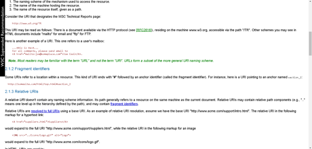

HyperText Markup Language
В этой версии изрядно подчистили элементы из предыдущих версий. Многие теги были отмечены как устаревшие и не рекомендованные к использованию. Вместо них нужно было использовать таблицы стилей CSS.
Новая версия включала поддержку фреймов, скриптов, общую процедуру внедрения разных объектов. Также в ней были усовершенствованы таблицы и формы, что кроме прочих плюсов обеспечивало большую доступность для людей с физическими недостатками.
 Версия HTML 4 была разработана с помощью экспертов в области интернационализации, таким образом стало возможно писать документы на любом языке и легко передавать их по всему миру.
Эта версия HTML разработана с помощью экспертов в области интернационализации, так что документы можно писать на любом языке и легко передавать их по всему миру. Это достигается за счет использования [RFC2070], относящегося к интернационализации HTML.
Важным шагом стало принятие стандарта ISO/IEC:10646 (см. [ISO10646]) в качестве набора символов для документов HTML. Это наиболее содержательный стандарт в мире, в котором решены вопросы представления национальных символов, направления письма, пунктуации и других языковых вопросов.
HTML теперь предоставляет лучшую поддержку различных языков в одном документе. Это обеспечивает более эффективное индексирование документов для поисковых машин, типографию высшего качества, преобразование текста в речь, более удобные переносы и т.д.